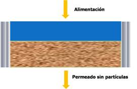
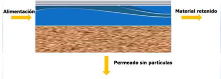
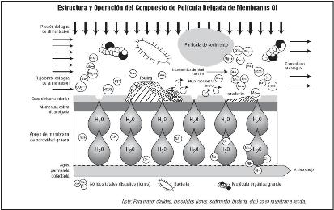
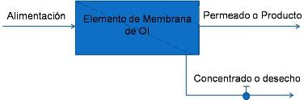
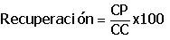

|
|
........Literatura>>>Ensuciamiento y limpieza en sistemas de ósmosis inversa
|
El factor que más afecta el rendimiento de los sistemas de procesamiento de agua por membrana es el ensuciamiento, que causa reducciones tanto en calidad y flujo de agua producto. La microfiltración, ultrafiltración, nanofiltración y ósmosis inversa, que son sistemas de procesamiento de agua por membrana, separan materiales suspendidos y disueltos de soluciones de agua en numerosas aplicaciones desde industriales, comerciales y residenciales. |
Generalmente, la microfiltración (MF) elimina partículas que van en tamaños de 0.1 a 1.0 micras (1000 a 10,000 angstroms), la ultrafiltración (UF) se utiliza para separar partículas en el dominio de 0.001 a 0.1 micras (10 a 1000 angstroms), y la nanofiltración (NF) y ósmosis inversa (OI) son ampliamente utilizadas para separar materiales don dimensiones menores de 0.001 micras (10 angstroms). La microfiltración es principalmente utilizada para remover materiales en suspensión o en forma coloidal. La ultrafiltración, nanofiltración y ósmosis inversa se utilizan para separar materiales disueltos en un solvente.
El funcionamiento de la tecnología de filtración se basa en el bombeo de una corriente líquida a través de cierto material filtrante. Un desarrollo reciente conocido como filtración de flujo cruzado o flujo tangencial permite procesar continuamente corrientes de fluido. En este proceso, la solución completa fluye por encima de y paralela a la superficie del filtro, y debido a que este filtro se encuentra presurizado (desde la bomba), el agua es forzada a través del filtro. El flujo turbulento de la solución completa sobre la superficie minimiza la acumulación de partículas en el filtro y facilita la operación continua del sistema. La Figura 1 muestra este proceso y se compara con la filtración convencional. El factor que más daña el rendimiento de los sistemas de membrana es el ensuciamiento de la membrana: materiales no solubles que cubren la superficie de la membrana causando una caída en calidad y/o flujo de agua producto.

Figura 1. Flujo convencional o en paralelo

Figura 2. Flujo tangencial o cruzado
Materiales que Dañan
Existe una gran cantidad de materiales que dañan o ensucian los sistemas de membranas. En general, la mayoría de materiales que ensucian pueden ser clasificados de la siguiente manera:
- Sólidos suspendidos
- Escamas
- Materia coloidal
- Óxidos de metal
- Aceite/grasa
- Materiales biológicos
El ensuciamiento por sólidos suspendidos resulta de una acumulación de partículas en la superficie de la membrana. Las partículas ingresan al sistema de la membrana a través de agua de fresca o de alimentación. Debido a una prefiltración inadecuada o al mal diseño del sistema e incluso ambos, se depositan sobre la superficie de la membrana sólidos en suspensión. La formación de escamas se debe a la precipitación de ciertas sales solubles, cuyos límites de solubilidad son excedidos durante el proceso de concentración del sistema de membranas. Éstas incluyen el carbonato de calcio, sulfato de calcio, sulfato de bario, sulfato de estroncio, carbonato de magnesio y fluoruro de calcio. Este fenómeno ocurre únicamente en los sistemas de ósmosis inversa donde se encuentran materiales iónicos que se concentran. En cuanto a la materia coloidal se trata de sólidos suspendidos muy pequeños (relativamente) que no se separan de la solución, tienen carga negativa y resisten la aglomeración. Si hay una alta concentración debida al proceso de la membrana los coloides se depositan en la superficie de la membrana. Los coloides tienden a agruparse, o dicho de otra forma se aglomeran, y precipitan. La deposición de óxido de metal ocurre comúnmente en forma de oxido de hierro, aluminio y, en un menor grado, manganeso. El hidróxido de hierro insoluble puede ser el resultado de hierro coloidal, oxidación de hierro ferroso en la corriente de alimentación, que se forman por la corrosión del hierro en el agua de alimentación, o de otros componentes del sistema. El hidróxido de aluminio tiene una solubilidad pequeña a un pH de 6.6, y su presencia en suministros de agua se debe a la adición de sulfato de aluminio que es añadido en plantas de tratamiento municipal. El hidróxido de manganeso se encuentra a frecuentemente en concentraciones muy pequeñas en suministros de agua de alimentación.
Los contaminantes como el aceite y la grasa son sustancias insolubles en agua pero solubles en solvente TF de hexano, cloroformo o freón. Estos contaminantes se encuentran en el agua, en la mayoría de los casos, como emulsión. Algunos materiales activos en la superficie reaccionan con aceite o grasa y forman gotitas de tamaño de coloides que son demasiado estables en agua.
De esta forma, los materiales de aceite/grasa cubren la superficie de la membrana. Frecuentemente la permeabilidad selectiva de ultrafiltración UF y de membranas de OI rompe la emulsión aceite/agua y el aceite libre es atraído hacia la superficie de la membrana.
El ensuciamiento biológico resulta del crecimiento de microorganismos en la superficie de la membrana que forman una biocapa o biopelícula. Las biocapas son capas discretas que se forman por microorganismos como al llevar a cabo su actividad metabólica. La capa es una matriz de glicocalix, un material capsular de polisacáridos extracelulares formados durante el crecimiento y la reproducción de microorganismos. La matriz se pega a una superficie y los microorganismos colonizan en la biocapa. Las biocapas sirven como estructuras que estabilizan las colonias, las protegen de desinfectantes y también los protegen de ser eliminados por el agua en que fluye, ayudan a depositar alimento de la corriente. En los sistemas de membrana, el crecimiento de la biocapa crea estructuras propias que atrapan las sales y previene que el flujo turbulento mezcle totalmente los solutos en la corriente.
Causas de Ensuciamiento
Todos los procesos de membrana (MF, UF, NF y OI) llevan acabo la separación de contaminantes de una solución por la acción del bombeo continuo de agua a través de una membrana (más técnicamente una diferencia de presión: presión alta en la alimentación y presión baja en las salidas o productos), una mayor concentración de contaminantes aumenta la probabilidad de que estos contaminantes se depositen sobre la superficie de la membrana. Aunque el principio de filtración por flujo tangencial está basado en el movimiento de la corriente de alimentación sobre la superficie de la membrana a velocidades lo suficientemente altas para evitar que los materiales insolubles se depositen, frecuentemente el ensuciamiento puede ocurrir, y de hecho ocurre. Cuando los contaminantes se depositan en la superficie de la membrana tapan sus microporos, reduciendo el flujo o caudal de agua producto que pasa a través de la membrana. También ocurre otro suceso que se conoce como polarización de la concentración. Mientras se acumula la capa de elementos dañinos en la membrana, los materiales disueltos quedan atrapados en la capa sin dispersarse fácilmente en la corriente de alimentación. Mientras aumenta su concentración, se hacen no solubles o pasan en su mayoría a través de la membrana.
El resultado neto es una mala calidad de agua producto, cualquiera de los materiales descritos líneas arriba puede producir una capa de ensuciamiento, causando la polarización de la concentración. La Figura 3 muestra esta capa de ensuciamiento.

3. Contaminantes en sistemas de membranas
Prevención del Ensuciamiento Diseño del Sistema
Debido a que cada tipo de material que ensucia tiene sus propias características particulares, ninguna característica en particular del diseño del sistema reducirá el potencial para todos los tipos de ensuciamiento. Sin embargo, en general, mantener la recuperación del sistema a un nivel relativamente bajo ayudará a minimizar el ensuciamiento. Recuperación se define como aquel porcentaje de la corriente de alimentación que pasa a través de la membrana y sale como agua de producto. Obviamente, mientras más alto sea el porcentaje de agua de alimentación que es forzado a través de la membrana, mayor será el peligro de que los materiales suspendidos o aquellos contaminantes que se hagan insolubles a mayores concentraciones ensucien la superficie de la membrana. La Figura 3 ilustra el diseño de un sistema de membrana e identifica cada corriente en términos del caudal y concentración del contaminante. Nótese la definición de recuperación.

CA: Caudal de alimentación
[CS]: Concentración de soluto en la corriente de alimentación
CP: Caudal de permeado
[CP]: Concentración de soluto en el permeado
CC: Caudal de concentrado
[CC]: Concentración del soluto en el concentrado
La recuperación expresada como porcentaje se define con la siguiente expresión:

Pretratamiento
Para cada tipo de contaminante dañino, la forma óptima de pretratamiento es diferente. Es extremadamente importante que el agua de alimentación sea analizada completamente para identificar los principales compuestos contaminantes que puedan estar causando el ensuciamiento y posterior daño en el sistema de membranas. Nuestra empresa recomienda realizar pruebas en los parámetros de calidad de agua para identificar los contaminantes y optimizar las tecnologías de pretratamiento. Más adelante se presenta una lista de tecnologías genéricas de pretratamiento apropiadas para varias categorías de materiales que ensucian.
Usted puede enviarnos una muestra del agua que desea purificar a nuestra dirección y de forma gratuita nosotros le haremos el análisis pertinente.
Limpieza
Debido a que ningún pretratamiento eliminará al 100% el ensuciamiento, en cierto momento la limpieza llegará a ser necesaria. Como regla general, el momento de limpiar la membrana será cuando ocurra una reducción del 10 por ciento ya sea en el caudal del agua de producto, en la presión de operación del sistema de membranas o en la calidad del agua. Como resultado de la polarización de concentración con membranas de NF u OI, una disminución en la calidad del agua de producto podría señalar el inicio del ensuciamiento antes de una disminución en el caudal del permeado. Como procedimiento provisional, se puede reducir temporalmente la presión trasera en el sistema para aumentar la velocidad del caudal de alimentación sobre la superficie para poder separar los materiales que causan el ensuciamiento, removiéndolos de la superficie de la membrana. La mayoría de los sistemas grandes de OI vienen equipados con unidades automáticas que logran hacer esto a una frecuencia previamente establecida, por ejemplo una vez al día durante diez minutos (comúnmente llamado retrolavado). Un sistema bien diseñado de procesamiento por membrana incluye un sistema de limpieza en el lugar (CIP) para llevar a cabo esta limpieza. Un tanque de solución de limpieza viene equipado con una bomba para dirigir el limpiador hacia el sistema de la membrana. Los caudales de permeado y concentrado son regresados al tanque de almacenamiento del sistema de limpieza para lograr la recirculación de la solución de limpieza. Dependiendo de la naturaleza del material que causa el ensuciamiento y el tipo de limpiador utilizado, la solución puede ser calentada y la membrana expuesta a altas velocidades, mojado, etc. Además, la solución de limpieza puede ser usada nuevamente varias veces antes de tirarla. Los tipos de productos químicos para limpieza que se encuentran disponibles son tan variados como lo son los tipos de materiales que ensucian la membrana. Enseguida se presentan ejemplos de varios sistemas químicos usados para eliminar materiales específicos que causan ensuciamiento. La eliminación de escamas se logra a menudo a través de la limpieza con un ácido orgánico, por ejemplo ácido cítrico o ácido sulfámico. Los productos químicos quelantes tales como EDTA ayudan en la remoción de escamas. Los ácidos minerales tales como el ácido clorhídrico (HCl) y el ácido sulfúrico (H2SO4) son muy efectivos, pero es peligroso manipularlos y pueden atacar ciertos polímeros de la membrana. Los materiales coloidales que causan ensuciamiento pueden ser eliminados con agentes quelantes o dispersantes, a menudo en combinación con surfactantes. Los óxidos de metal reaccionan favorablemente con los limpiadores acídicos y agentes quelantes. Las biocapas son eliminadas de manera más efectiva con enzimas, a menudo acompañadas por agentes quelantes. Los materiales de aceite/grasa que causan ensuciamiento pueden ser disueltos con soluciones alcalinas que contienen surfactantes y agentes emulsificantes tales como el sulfato laurilico de sodio. Las soluciones alcalinas fuertes pueden hidrolizar los polímeros de membrana celulósica.
En nuestra empresa tenemos disponibles los limpiadores que reciben el nombre de detergentes y también damos servicio de limpieza para todo tipo y marca de membranas de ósmosis inversa.
Materiales que ensucian
- Sólidos suspendidos
- Formación de escamas
- Materiales coloidales
- Metales
- Materiales biológicos
- Aceite/grasa
- Sales de magnesio y calcio (dureza)
Pretratamiento Recomendado
- Filtración, tal como filtros de distintos materiales seguidos por filtros de cartucho de 5 micras.
- Ajuste del Suavizador y/o pH, adición de dispersante.
- Coagulación seguida por filtración.
- Oxidación seguida por filtración, adición de dispersante.
- Adición de desinfectante (tal como cloro u ozono) seguida por filtración.
- Separación aceite/grasa, coagulación seguida por filtración.
Bibliografía
- Causas de y Curas para el Ensuciamiento de Membranas. Cartwright, S. Peter. Agua Latinoamérica, Volumen 4 - Número 4, 1 de Julio de 2004, Paginas 10-12
Podemos enviar cualquier equipo a cualquier parte del mundo, por el medio que usted elija: DHL, Estafeta, Fedex, Multipack, UPS, vía marítima, vía terrestre en flete por cobrar o pre-pagado.
Si no encuentra listado en nuestro sitio web el producto que busca puede contactarnos vía telefónica o correo electrónico, un ingeniero de ventas será asignado para responder con prontitud a su solicitud. |